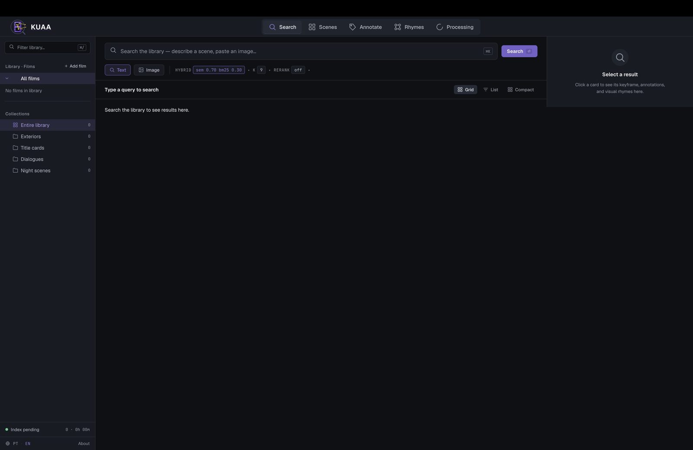
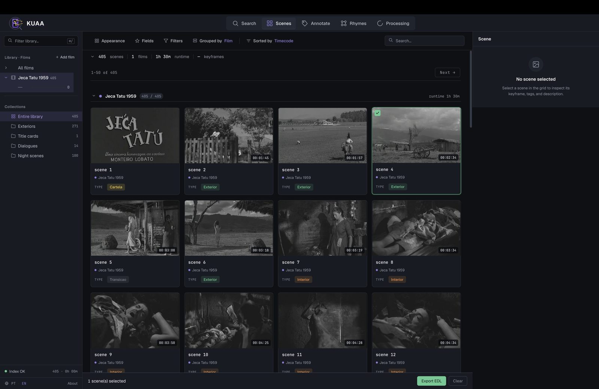
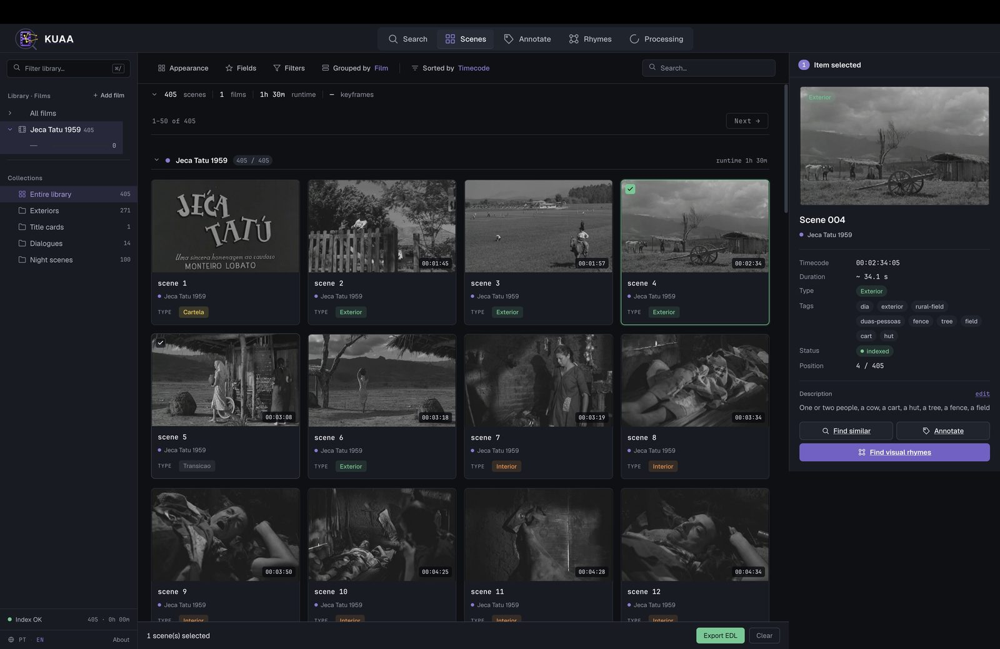
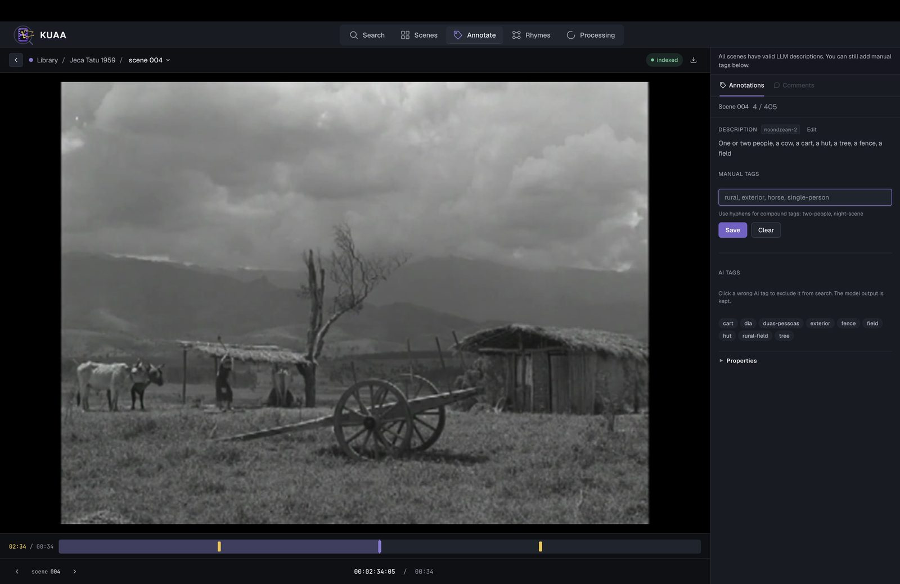
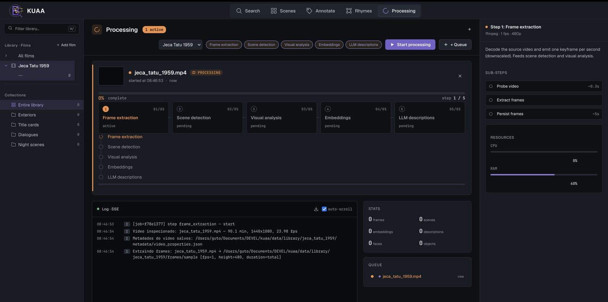

kuaa · "to know" in Guaraní
Turns raw video files into a searchable, human-reviewable scene catalog. Runs on one machine — models, processing, and storage all local.
offline · cpu / mps / cuda · no api keys · no sent frames
The problem
A film has a title and a date. The thing a researcher actually wants — a crowd, a train station, a night interior — is buried inside the footage.
Manual scene cataloging is slow. Fully automated cataloging isn't reliable enough to trust. KUAA runs a fast AI first pass to make material discoverable, then keeps curators in the loop to correct and confirm.
Built around the constraints real archives live with — privacy, degraded black-and-white footage, sparse metadata, and the need to trace every result back to the config and models that produced it.
Query by text or by image. Dense SigLIP2 embeddings fused with BM25 lexical search through Reciprocal Rank Fusion.
Everything runs on one machine. Data sovereignty for institutions that can't expose sensitive material — no API keys required.
The model writes a searchable first pass; curators correct it. Manual edits are stored apart and measured as a quality signal.
hybrid text + image · bm25 + dense · rrf fusion · manual edits stored separately
The pipeline · five steps
.mp4 to an indexed catalog.Each run is sequential and traceable. A run_manifest.json records the input, config hash, and model backends behind every piece of metadata.
FFmpeg decodes the source and emits one downscaled keyframe per second.
PySceneDetect finds cut boundaries and stores a representative keyframe per scene.
YOLOv8 and MTCNN detect objects, faces, and coarse environment labels.
SigLIP2 image embeddings are indexed with scene and keyframe mapping.
Moondream 2 writes a local scene description and tags for each keyframe.
run_manifest.json · config hash + model backend recorded per run
A walk through the app
Screenshots from a real run over Jeca Tatu (1959), a public-domain Brazilian film — 405 detected scenes across a 90-minute runtime.
One search box spans text and reference-image queries. The weighting between semantic and lexical scores is tunable, and the reranker is opt-in.
HYBRID · sem 0.70 / bm25 0.30 · rerank off
Detected scenes land in a grid with timecodes and a coarse type — exterior, interior, title card, transition. Collections group them for fast review.
405 scenes · 1 film · 1h 30m runtime
Open any scene to see its keyframe, tags, and description — then jump to Find visual rhymes: a kNN search over keyframe embeddings, diversified with Maximal Marginal Relevance. This is the motif in the logo.
scene 004 · indexed · exterior
Curators add normalized manual tags and prune wrong AI tags from search — while the original model output is always kept. The two layers merge at read time.
description · moondream-2
A live SSE log streams each stage with resource use and running counts — frames, scenes, embeddings, descriptions, faces, objects — so a long local job stays legible.
step 1 / 5 · frame_extraction — start
Under the hood
Backends are swapped through typed Protocols, so a model role can change without rewriting the pipeline.
| Component | Model |
|---|---|
| Image embedding | google/siglip2-large-patch16-256 |
| Reranker | BAAI/bge-reranker-v2-m3 |
| Scene description | Moondream 2 |
| Object detection | YOLOv8 |
| Face detection | MTCNN |
Retrieval is measured, not asserted — the eval path reports Recall@5, Recall@10, MRR and nDCG@10 over a fixed query set, plus manual-correction stats. Selections export as JSON, CSV, or a CMX 3600 EDL you can drop straight into an NLE.
recall@5 · recall@10 · mrr · ndcg@10 · export: json / csv / cmx 3600 edl
KUAA is local-first and single-user by design. The public demo runs on Library of Congress footage, not private institutional data. Generated descriptions are treated as reviewable first-pass metadata — useful, but not authoritative catalog records.
The processing pipeline, retrieval engine, annotation, evaluation runner, exports, and run manifests are implemented and tested. Final published metrics and the demo artifact bundle are a release step in progress.
v0.8.0rc1 · MIT (YOLOv8 component AGPL-3.0) · model licenses need review before institutional deployment